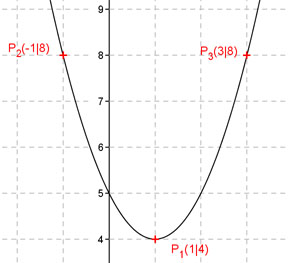

Aufgabe 77 Wie lautet die Funktionsgleichung einer Parabel der Form y = ax2 + bx + c, wenn ihr Graph durch die Punkte P1(1|4), P2(-1|8) und P3(3|8) geht? P1 ergibt: x = 1 und y = 4 Eingesetzt in y = ax2 + bx + c 4 = a * 12 + b * 1 + c a + b + c = 4 (1) P2 ergibt: x = -1 und y = 8 Eingesetzt in y = ax2 + bx + c 8 = a * (-1)2 + b * (-1) + c a – b + c = 8 (2) P3 ergibt: x = 3 und y = 8 Eingesetzt in y = ax2 + bx + c 8 = a * 32 + b * 3 + c 9a + 3b + c = 8 (3) Lösung des linearen Gleichungssystems mit (1) , (2) und (3): a + b + c = 4 a – b + c = 8 9a + 3b + c = 8 (1) + (2) ergibt a + b + c = 4 a – b + c = 8 ---------------- 2a + 2c = 12 (4) (2) * 3 + (3) ergibt 3a – 3b + 3c = 24 9a + 3b + c = 8 ----------------------- 12a + 4c = 32 (5) (4) * (-6) + (5) ergibt: -12a – 12c = -72 12a + 4c = 32 ------------------ -8c = -40 |:(-8) c = 5 In (4) eingesetzt: 2a + 2 * 5 = 12 |-10 2a = 2 | :2 a = 1 In (1) eingesetzt: 1 + b + 5 = 4 |-6 b = -2 Gesuchte Funktion: y = x2 - 2x + 5 